French Quarter Travel Guide
Oldest neighborhood in the city of New Orleans that the city developed around after it was founded in 1718 by Jean-Baptiste Le Moyne de Bienville
Places to See in the French Quarter
1850 House Museum and Gift Shop
Furnished rowhouse museum showcasing mid-19th century New Orleans life through period décor, artifacts, and interpretive exhibits.
Arnaud's Germaine Wells Mardi Gras Museum
Museum showcasing an opulent collection of Mardi Gras costumes, photographs, and memorabilia from New Orleans’ Carnival history, housed above a historic French Quarter restaurant.

Audubon Aquarium
Modern aquarium and insectarium complex featuring immersive exhibits, touch pools, and rare species like white alligators and penguins along the Mississippi Riverfront.
Bienville Place
A historic downtown public square featuring fountains, gardens, walking paths, public art, and open spaces that serve as a popular gathering place for community events and recreation.
Bloody Mary's Haunted Museum and Voodoo Shop
Paranormal museum and voodoo shop housed in a 200-year-old French Quarter building featuring haunted artifacts, séance parlors, and ghost hunting experiences.

Bourbon Street
Historic street in the heart of the French Quarter of New Orleans. Extending thirteen blocks from Canal Street to Esplanade Avenue, Bourbon Street is famous for its many bars and strip clubs.
Cabildo
Historic Spanish colonial building housing Louisiana State Museum exhibits on the Louisiana Purchase, Hurricane Katrina, and regional cultural heritage.
Cafe Beignet Royal Street
Charming French-style café serving fresh beignets, breakfast, and chicory coffee with live jazz and pet-friendly outdoor seating in the heart of the French Quarter.
Cafe Du Monde
New Orleans landmark and tourist destination, known for its café au lait and beignets
Canal Street
Major thoroughfare in the city of New Orleans, forming the upriver boundary of the city's oldest neighborhood, the French Quarter
Carousel Bar and Lounge
Iconic rotating bar inside a historic hotel offering classic cocktails, live jazz, and vintage ambiance in the heart of the French Quarter.
French Market Shops of Colonnade
Bustling open-air arcade filled with eclectic boutiques, artisan goods, and local crafts in a historic setting.
Galatoires
Restaurant on Bourbon Street in the French Quarter specializing in French Creole cooking
Gardette-LePretre Mansion
Elegant three-story residence featuring intricate cast-iron balconies and a storied architectural legacy.
Hermann-Grima House / Gallier House
A preserved 19th-century historic house museum featuring period-furnished rooms, original service buildings, landscaped courtyards, and guided tours interpreting the lives of wealthy families, enslaved laborers, and domestic workers.
Historic New Orleans Collection
Museum and research center offering exhibitions, guided tours, and cultural programs focused on the history and heritage of New Orleans and the Gulf South.
Lafitte's Blacksmith Shop Bar
Historic 18th-century bar housed in a French Colonial cottage, offering candlelit ambiance, piano music, and signature frozen drinks.

Madame John's Legacy
18th-century French colonial residence preserved as a museum, showcasing Creole architecture and New Orleans' early urban history.
Mardi Gras Museum of Costumes and Culture
Interactive museum celebrating Mardi Gras traditions through elaborate costumes, cultural exhibits, and immersive theatrical experiences.
Museum of Death New Orleans
Macabre museum featuring exhibits on death, true crime, funerary customs, and mortuary artifacts in a self-guided, immersive experience.
Musical Legends Park
Small park on Bourbon Street features life-size bronze statues of New Orleans musicians
New Orleans Historic Voodoo Museum
Small museum dedicated to the history, folklore, and spiritual practices of New Orleans Voodoo, featuring artifacts, altars, and guided tours.
New Orleans Jazz Museum
Interactive museum housed in the historic Old U.S. Mint, celebrating jazz through exhibits, performances, and educational programs.
New Orleans Pharmacy Museum
Historic 19th-century apothecary museum featuring antique medical instruments, potions, and exhibits on early pharmaceutical practices.
New Orleans Storyville Museum
Immersive museum exploring the cultural, musical, and social history of New Orleans' infamous Storyville red-light district through theatrical exhibits and rare artifacts.
Old Ursuline Convent Museum
Colonial-era convent turned museum showcasing Catholic heritage, French architecture, and early New Orleans history through sacred art and archival exhibits.
Paddlewheeler Creole Queen
Authentic paddlewheel riverboat offering historical, jazz dinner, and brunch cruises along the Mississippi River with live narration and music.
Preservation Hall
Intimate French Quarter venue offering nightly acoustic jazz performances by local musicians in a historic, no-frills setting.
Shops at Jax Brewery/ Jackson Brewing Company
Regional brewery operating in New Orleans, from 1890 to 1974, now a historic landmark in New Orleans and houses restaurants, apartments, and entertainment venues
Jackson Square
Historic park in the French Quarter, declared a National Historic Landmark in 1960, for its central role in the city's history, and as the site where in 1803 Louisiana was made United States territory
Southern Food and Beverage Museum and Museum of American Cocktail
Interactive culinary museum celebrating Southern foodways and cocktail culture through exhibits, tastings, and educational programming.
Steamboat Natchez
Sternwheel steamboat based in New Orleans, docks at the Toulouse Street Wharf featuring day trip harbor and dinner cruises along the Mississippi River

Pat O'Briens
Home to the original flaming fountain and the hurricane cocktail with a piano bar, featuring twin "dueling" pianos where local entertainers take song requests


Riverwalk New Orleans
Outlet mall located in the Central Business District of New Orleans is the nation's first downtown outlet center
Spanish Plaza
Plaza dedicated by Spain in 1976 to the City of New Orleans in remembrance of their common historical past and as a pledge of fraternity in the future
St. Louis Cathedral
Oldest cathedral in continuous use in the United State
The Presbytere
French Colonial-style museum featuring immersive exhibits on Mardi Gras traditions and the impact of Hurricane Katrina.
Vue Orleans Observation Deck
Indoor and outdoor observation deck offering 360-degree panoramic views of New Orleans, interactive cultural exhibits, and immersive digital experiences.
Witches Brew Gallery and Haunted Sanctuary
Occult-themed gallery and tour hub offering immersive haunted experiences, mystical art, and guided explorations of New Orleans' supernatural history.
Woldenberg Park
Park in New Orleans, created in the late 1980s on land that had been occupied by old wharves and warehouses along the Mississippi Riverfront, in the upper French Quarter
Overview
The French Quarter, or Vieux Carré, is the oldest neighborhood in New Orleans and the city's top tourist destination. Founded in 1718 around a central square, most of its surviving buildings date to the late 18th-century Spanish colonial period or the early 19th century, giving the Quarter its distinctive French and Spanish Creole architecture. The district, designated a National Historic Landmark, stretches along the Mississippi River from Canal Street to Esplanade Avenue and inland to North Rampart Street.
At the heart of the Quarter is Jackson Square, a public park centered on an equestrian statue of Andrew Jackson and framed by three 18th-century landmarks: St. Louis Cathedral, the Cabildo, and the Presbytère, the latter two now museums. The square has long attracted painters, tarot readers, and street musicians, and sits across from Café du Monde, open around the clock for beignets and café au lait since the Civil War era.
The Quarter's best-known street, Bourbon Street, is lined with bars and live music, including historic spots such as Lafitte's Blacksmith Shop, one of the oldest bars in the country, and Pat O'Brien's, birthplace of the Hurricane cocktail. Its lower blocks are also the center of the city's gay nightlife.
The neighborhood's dining scene ranges from formal to casual, with 19th-century institutions such as Antoine's, Tujague's, Arnaud's, and Galatoire's alongside newer spots from chefs like Emeril Lagasse, and casual favorites such as the Gumbo Shop and Central Grocery, home of the original muffuletta sandwich.
This article uses material from the Wikipedia article "French Quarter" which is released under the Creative Commons Attribution-Share-Alike License 3.0
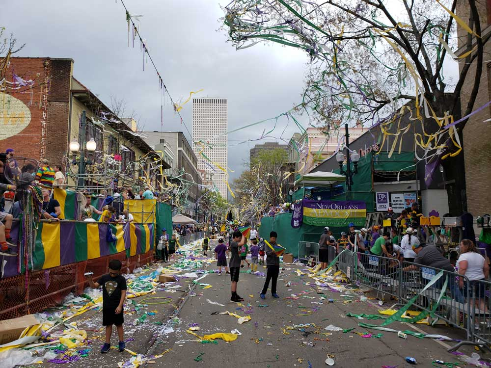
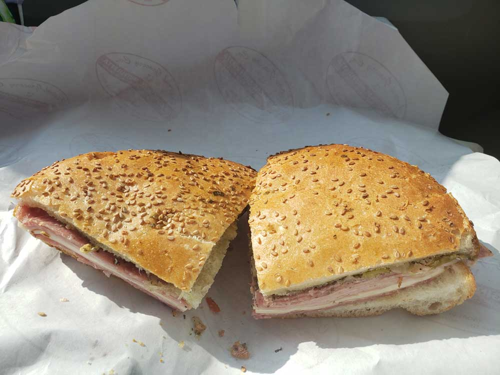
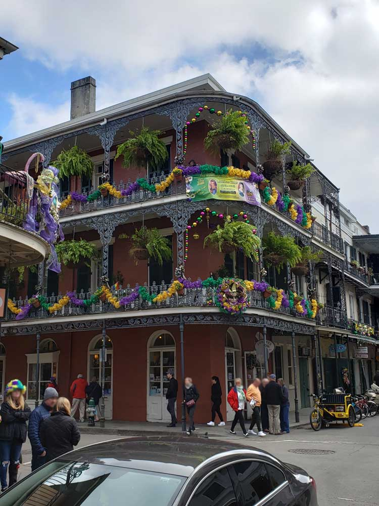
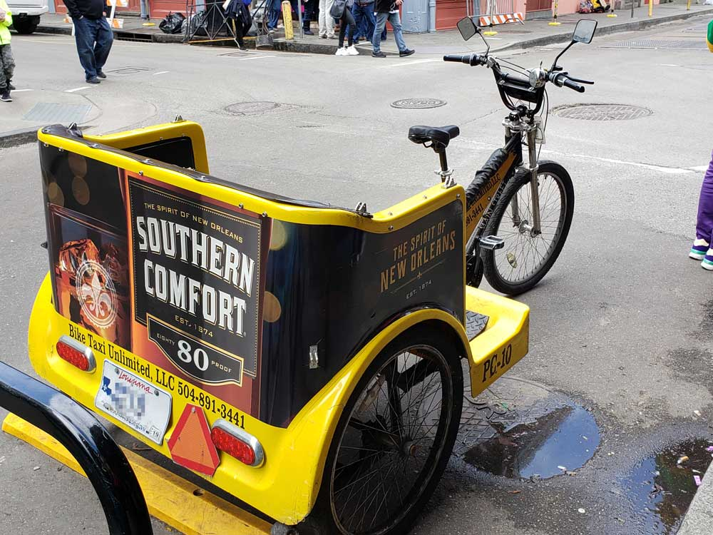
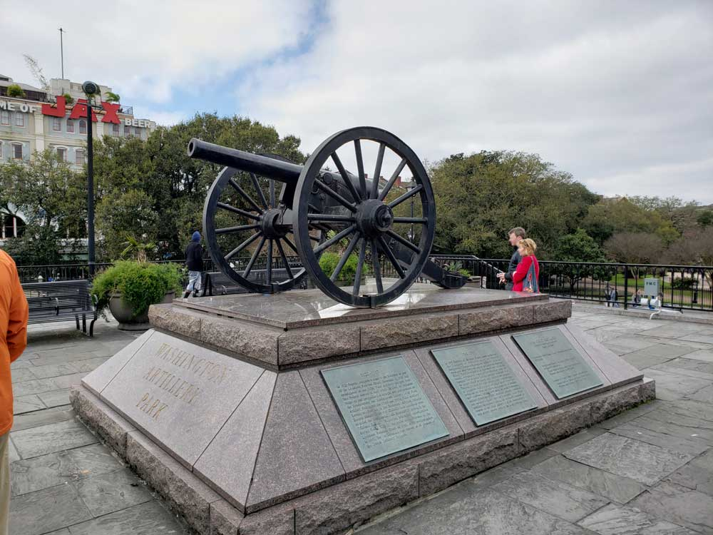
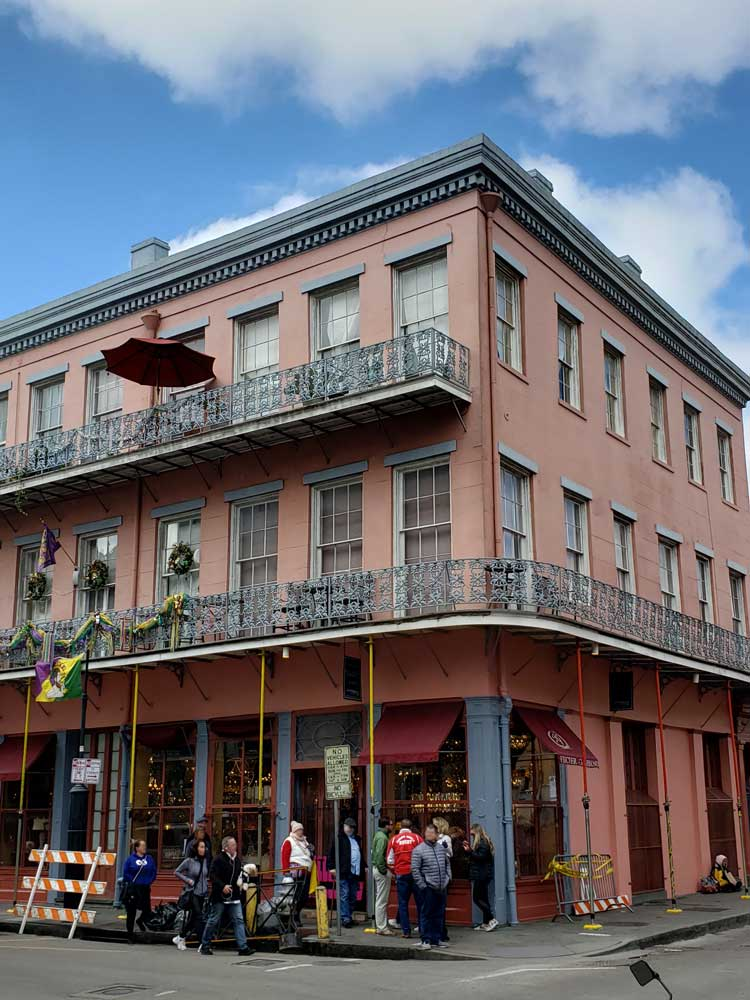
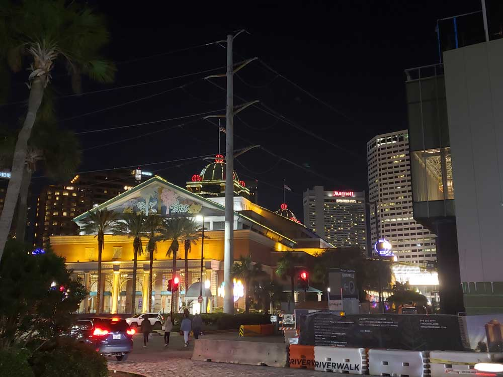
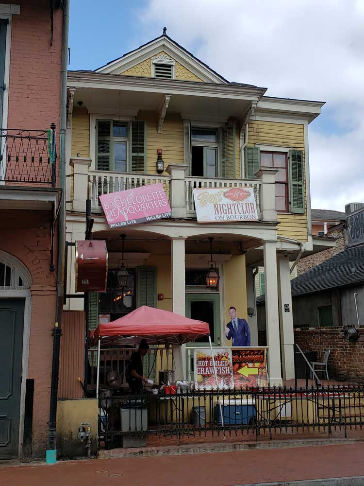
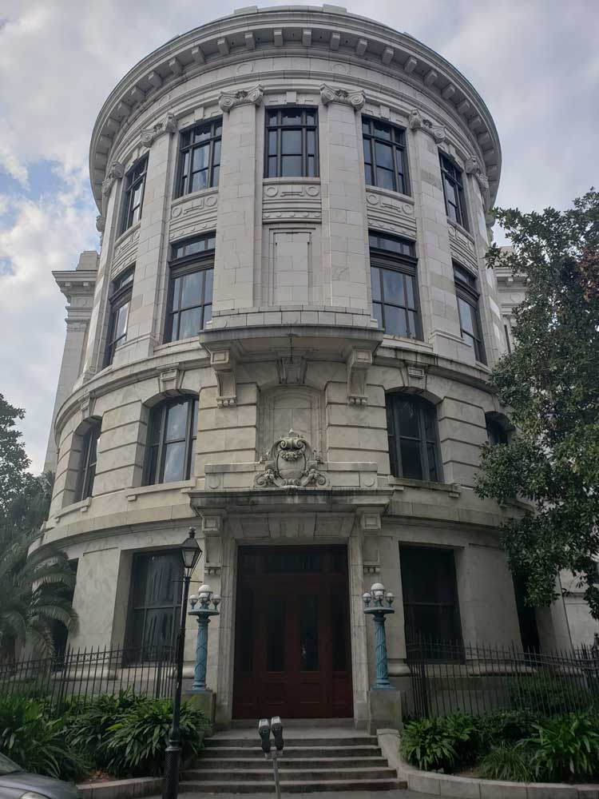
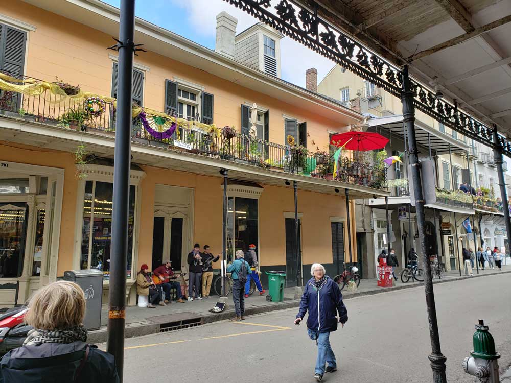
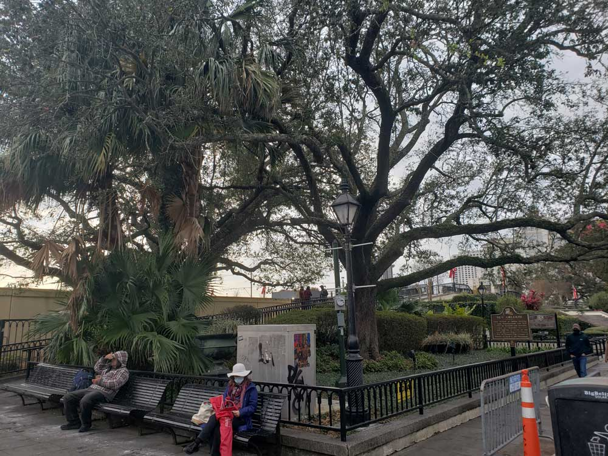
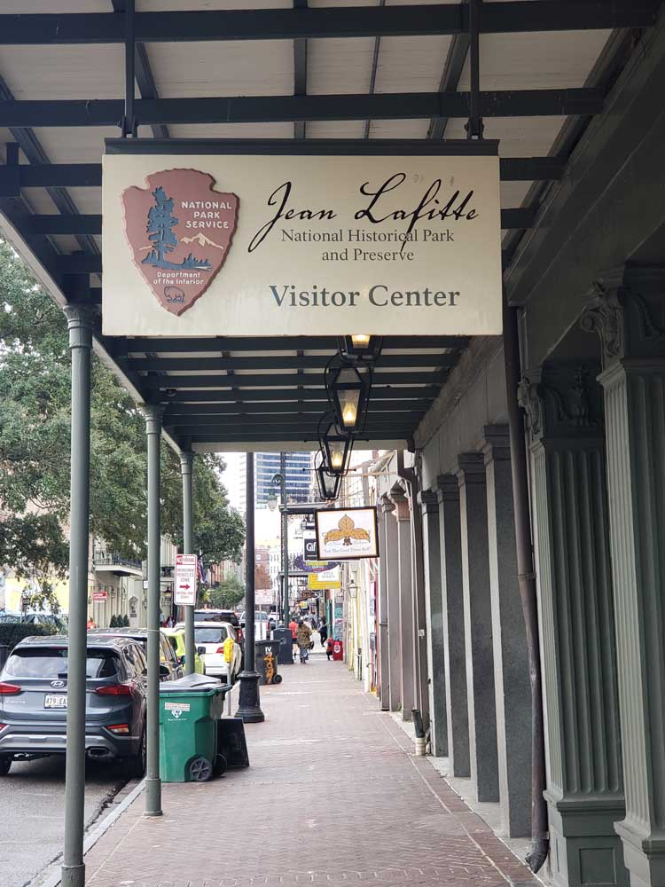